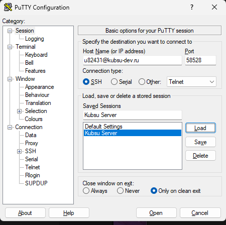
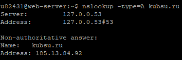
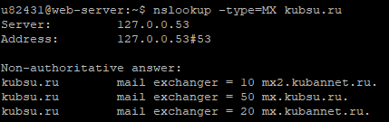
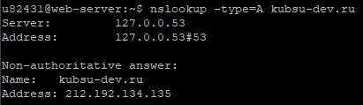
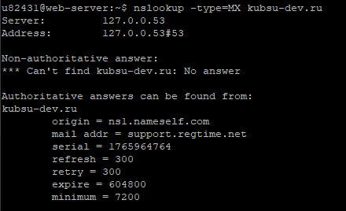
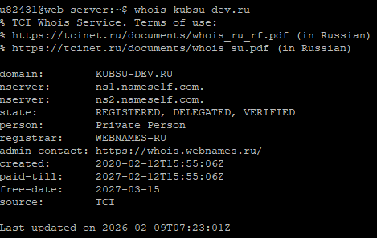
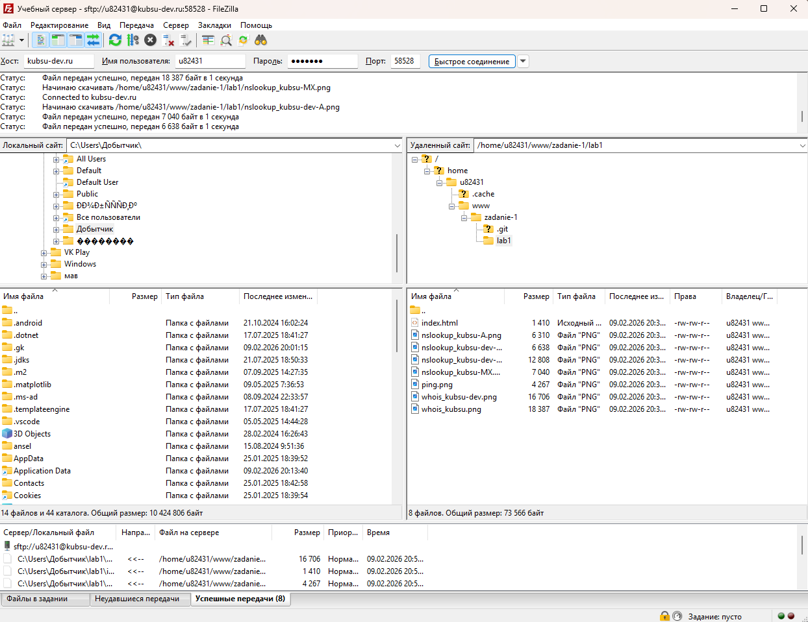

Студент: u82431

Команда ping используется для проверки доступности узла сети и измерения времени отклика. В данном случае мы выполнили ping -c 4 kubsu.ru, чтобы определить IP-адрес сервера, на котором размещён сайт kubsu.ru. Первая строка вывода команды содержит IP-адрес в квадратных скобках. Флаг -c 4 ограничивает отправку четырьмя пакетами, после чего команда автоматически завершается.
Определение IP-адреса домена kubsu.ru

Команда nslookup с типом A (Address) используется для получения IPv4-адреса, соответствующего доменному имени. A-запись связывает домен с конкретным сервером. Мы выполнили nslookup -type=A kubsu.ru и nslookup -type=A kubsu-dev.ru, чтобы узнать, на какие IP-адреса указывают эти домены.
Команда nslookup с типом MX (Mail Exchange) показывает, какие почтовые серверы обрабатывают электронную почту для данного домена. Число перед сервером — это приоритет: чем оно меньше, тем выше приоритет сервера. Мы выполнили nslookup -type=MX kubsu.ru и nslookup -type=MX kubsu-dev.ru, чтобы определить почтовые серверы этих доменов.




Команда whois позволяет получить регистрационную информацию о домене: дату регистрации, дату окончания срока регистрации, данные о регистраторе и администраторе. В данном задании нас интересовала дата регистрации доменов kubsu.ru и kubsu-dev.ru. Эту информацию мы нашли в строках created: или Creation Date: в выводе команды whois.


FileZilla — это FTP-клиент с поддержкой SFTP (SSH File Transfer Protocol). Мы использовали его, чтобы скачать файлы с учебного сервера на локальный компьютер по защищённому протоколу. На скриншоте видно успешное подключение к серверу kubsu-dev.ru на порт 58528 и процесс скачивания файлов из папки www/zadanie-1. Зелёные строки в нижней панели подтверждают, что все файлы были успешно переданы.
